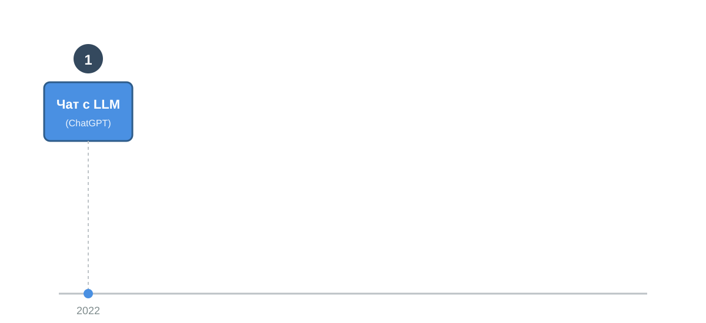
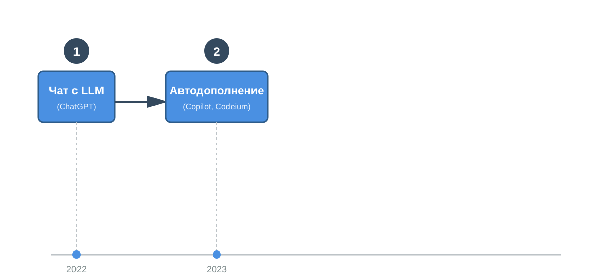
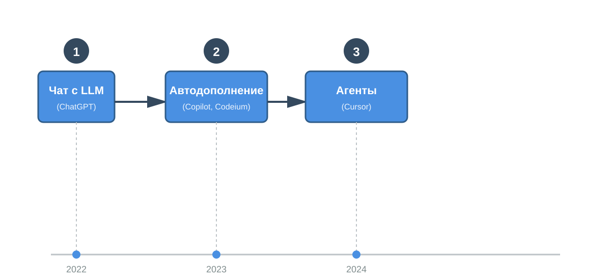
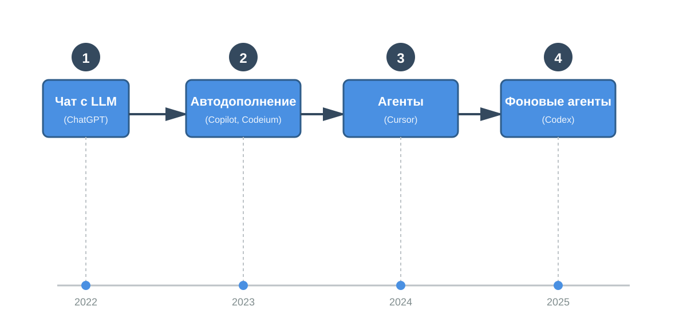
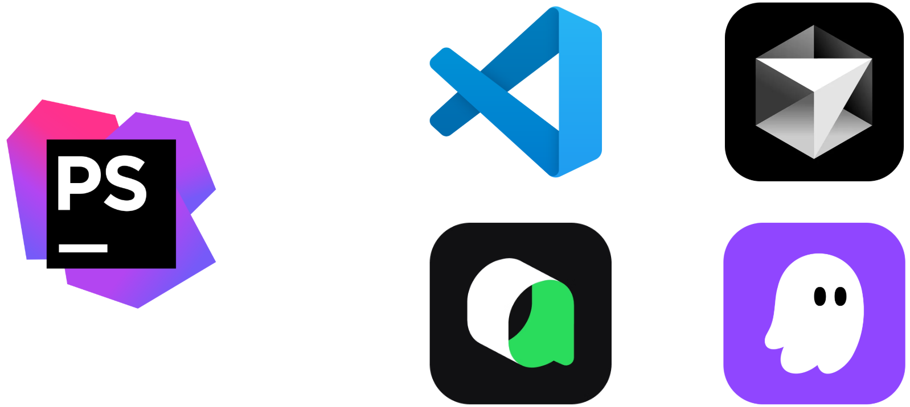
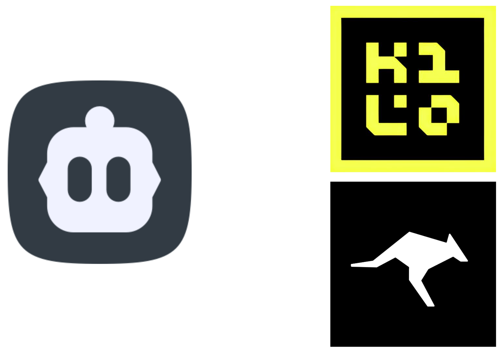
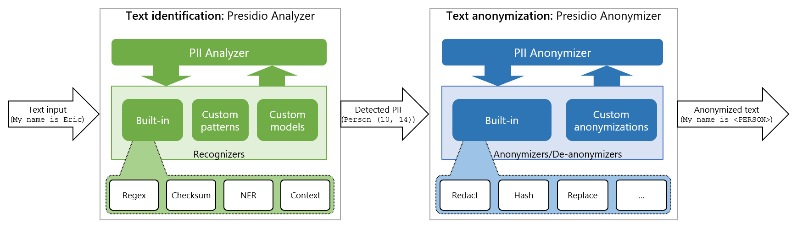
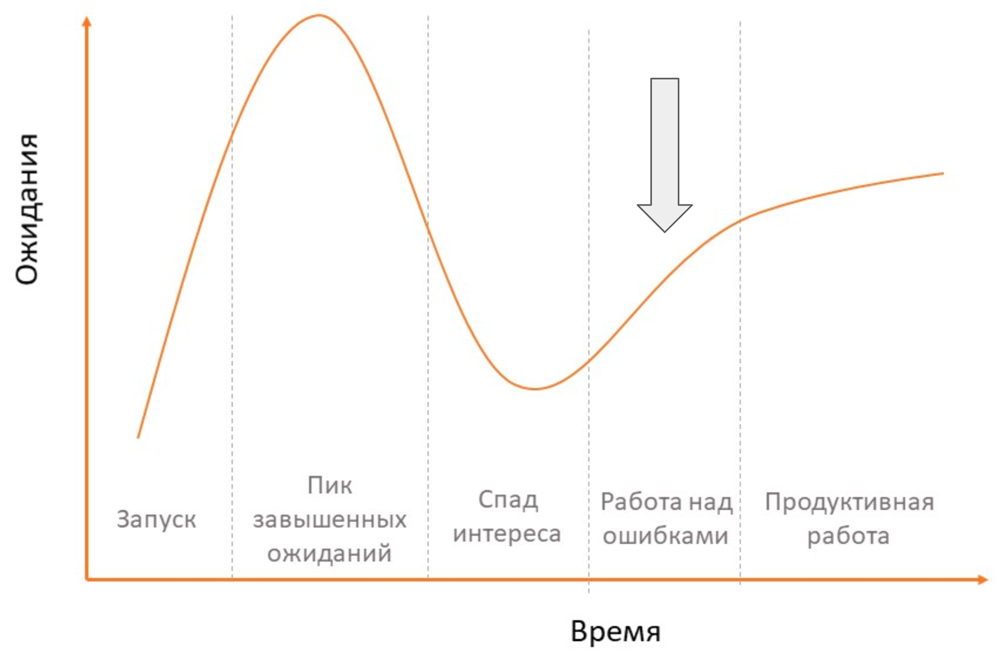

AI-агенты в разработке: системный подход
Денис Кукуреко
Кто я
- Backend-разработчик и тимлид в компании вебпрактик
- Работаю с PHP и Symfony
- Активно использую AI-инструменты в разработке
Структура доклада
- Что такое AI агенты
- Выбор инструментов и моделей
- Подготовка проекта и контекста
- Постановка задачи
Что такое AI агенты
и как они работают
Структура раздела
- Классификация AI инструментов
- Что такое агенты
- Как агенты меняют процесс разработки
Эволюция AI инструментов в разработке

Эволюция AI инструментов в разработке

Эволюция AI инструментов в разработке

Эволюция AI инструментов в разработке

Киллер-фичи агентов
- Видит содержимое папки, в которой запущен
- Видит структуру кода
- Может запускать CLI команды
- Буквально пишет код вместо тебя
Агенты != silver bullet
- Требуют хорошей инженерной культуры
- Подготовки проекта
- За код и результат ВСЕГДА отвечает человек, а не агент
- Если агенты не прижились у вас в команде - возможно проблема не в агентах
Разработка с AI агентами != Вайбкодинг
Вайбкодинг - пишешь промпты под музыку и лавандовый раф, надеешься что нейронка сгенерирует именно то, о чём ты думаешь
AI агенты - мощный инструмент. Но с большой силой приходит большая ответственность
AI агенты - новый подход к написанию кода
- Мы перестаём быть механическими писателями кода
- Основная задача — качественное формирование требований и ревью результата
Ты не только разработчик, но и тимлид
- И ты тоже
- И я
- И каждый, у кого есть команда из AI агентов
Задачи те же
Представь, что к тебе приходит новый джун
- Он хорошо умеет писать код, но ничего не знает о твоем проекте
- Без онбординга, понятных инструкций и ревью может (и будет) чудить
Выбор инструментов
и моделей
Структура раздела
- Выбор модели
- IDE и редакторы кода
- Плагины
- CLI
Выбор модели: SWE bench
| Место |
Модель |
Процент |
| 1 |
Gemini 3 Pro |
71.6 |
| 2 |
GPT 5.1 Codex |
70.4 |
| 3 |
Claude Sonnet 4.5 Thinking |
69.8 |
| 4 |
GPT 5 Codex |
69.4 |
| 5 |
Claude Haiku 4.5 Thinking |
68.8 |
Выбор модели
Проприетарные модели:
- Claude sonnet 4.5
- GPT-5.1 Codex
- Gemini 3 Pro
Выбор модели
Опенсорсные модели:
- GLM 4.6
- MiniMax 2
- Qwen 3 coder
- Kimi k2
- DeepSeek V3.1
IDE и редакторы кода

Cursor
- С него начался хайп
- Слабо адаптирован под PHP
- Быстро заканчиваются лимиты
- Агенты - кор функционал
PhpStorm
- Опоздал на несколько месяцев
- Отлично адаптирован под PHP
- ОЧЕНЬ быстро заканчиваются лимиты
- Агенты - вспомогательный функционал
Было у отца два сына

В семье ни без windsurf'a
Kilo Code: Ключевые преимущества
- Стабильная работа в PHPStorm
- Встроенный Memory Bank
- Широкий выбор AI провайдеров
- Агенты с ролями
Claude Code
- Передовые модели
- Лучший UX среди CLI
- Хорошее соотношение лимитов и стоимости
- Активное развитие, новые фичи
Qwen Code
- Бесплатно и доступно в РФ
- Неплохие модели
- Хороший UX
- Активное развитие, новые фичи
Подготовка проекта
и контекста
Структура раздела
- Agents.md
- Memory bank
- MCP
- Безопасность
Я не в контексте
И агент тоже. Нужно дать ему весь необходимый контекст
- Контекст вашей команды\компании
- Контекст проекта
Важно - агент помнит НАМНОГО меньше контекста, чем человек. Можно дообучить агента под свой проект и\или команду, но такое доступно только избранным
Agents.md
Это база, это знать надо
- Файл с правилами для агента,
которые он добавляет в контекст при каждом запуске
- Чтоб создать первую итерацию достаточно запустить команду init
- Agents.md - не константа
Agents.md
Базовый минимум:
- Основные правила работы агента
- Краткое описание проекта и стека
- Кодстайл и прочие стандарты
Даже такая базовая конфигурация даст неплохой буст в плане предсказуемости результата и снизит количество галлюцинаций
Memory bank
- Следующий шаг в документировании проекта
- Хорошей практикой будет сразу подготовить промпт
для актуализации документации
- Добавьте информацию о memory bank в agents.md
- Если ваша база знаний лежит отдельно от кода - не беда, используйте MCP
А на русском писать можно?
Можно! А еще лучше - на польском!
MCP
Важный шаг в подготовке проекта - подключение нужных инструментов
На практике MCP — волшебный портал во внешний мир для агента. Можно дать доступ к таск-трекеру и документации, приложениям, актуальной документации
Безопасность на уровне конфигов: .agentignore
Запрети агентам читать энвы, порадуй безопасника хоть немного
Proxy - на примере Microsoft Presidio

Структура раздела
- Уровни делегирования
- Жизненный цикл задачи для агента
- SDD
Я не в контексте. Опять
Агент теперь в курсе о проекте и ваших стандартах
Но не знает:
- Что хочет клиент
- Что было на созвоне
- О чем договорились в чатиках
Уровни делегирования задач агенту
- Краткая верхнеуровневая инструкция
- Стандартная задача
- Детальная спецификация
Уровень 1: Краткая верхнеуровневая инструкция
Пример: Сделай страницу авторизации
Когда использовать:
- Прототипирование
- Мелкие типовые задачи и правки
Уровень 2: Стандартная задача
Пример: Сделай страницу авторизации. Форма с email/паролем, валидация, кнопка "Забыли пароль", редирект на главную после успеха
Когда использовать:
- Прототипирование, мелкие проекты
- Рефакторинг
- Задачи низкой сложности
Уровень 3: Детальная спецификация
Пример: Документ auth-spec.md с требованиями,
архитектурой (использовать JWT), сценариями (успех/ошибки/rate limiting), security requirements, план реализации
Когда использовать:
- Средние и крупные проекты
- Задачи средней и высокой сложности
Жизненный цикл задачи для агента
- Анализируем задачу и проект
- Разбиваем на небольшие подзадачи (планирование)
- Прорабатываем план реализации. Тут же появляется спецификация, заготовка документации
- Проводим ревью плана
Пишем Генерируем код- Проводим ревью результата
Агента можно и нужно использовать
на всех этапах, а не ТОЛЬКО
для написания кода
Spec-Driven Development
- GitHub Spec Kit
- OpenSpec
- Kiro
- Qoder
Вместо выводов - Gartner Hype Cycle

Скил работы с AI - это скилл
разработчика